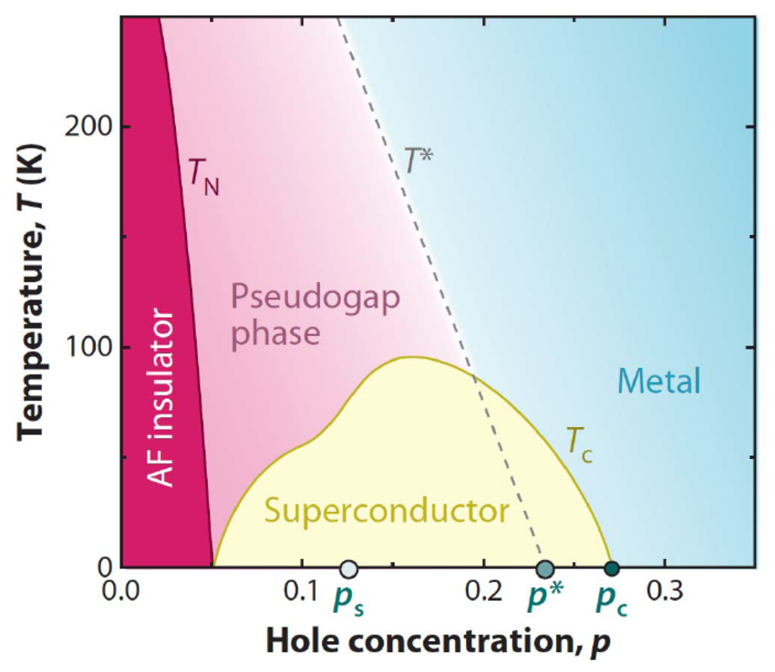

Electrical transport
Resistivity, Hall effect, and magnetoresistance reveal how charge carriers and scattering evolve across the phase diagram.
Cuprates • Strong Correlations • Superconductivity • Quantum Materials
High-temperature superconducting cuprates are among the most studied and still most puzzling materials in condensed matter physics. Their superconducting state emerges from a strongly correlated electronic system in which conventional single-particle descriptions are often insufficient.

The Problem
One of the great successes of solid-state physics is band theory. In many materials, the complicated interactions among many electrons can be approximated by treating electrons as quasiparticles moving through an effective periodic potential.
This picture explains the electronic behavior of a huge range of metals, semiconductors, and insulators.
But there are important materials where this approach fails. Cuprate superconductors belong to that more strongly correlated category.
In strongly correlated systems, electron–electron interactions are not a small correction to the single-particle picture. They can determine the electronic state itself.
Strong Correlations
A classic example of the failure of simple band theory is the Mott insulator.
In a simplified band picture, a partially filled electronic band should allow electrons to move through the lattice and therefore produce metallic behavior.
However, sufficiently strong Coulomb repulsion between electrons can suppress that motion. Moving one electron onto a site already occupied by another electron costs an interaction energy, commonly represented by \(U\).
When this interaction becomes large compared with the kinetic energy associated with hopping between sites, an electronically insulating state can emerge even though conventional band filling would suggest a metal.
Hubbard Model
One of the simplest theoretical models that captures this competition is the Hubbard model.
The model contains two central ingredients: electrons can hop between neighboring lattice sites, and two electrons occupying the same site experience an interaction energy.
The hopping term favors delocalized electrons and metallic behavior, while the interaction term favors localization.
Despite its compact form, the Hubbard model can produce remarkably rich behavior and remains one of the central theoretical frameworks used when discussing strongly correlated electron systems.
Cuprates
Cuprate superconductors are layered materials whose essential electronic structure is associated with copper–oxygen CuO₂ planes.
The parent compounds are typically antiferromagnetic insulators. Their insulating behavior cannot be understood adequately using a simple weakly interacting band picture.
The strong interactions among electrons, together with the magnetic structure of the CuO₂ planes, provide the starting point for much of the physics of the cuprates.
Doping
One of the most remarkable features of the cuprates is what happens when charge carriers are introduced into the parent material.
Depending on the material family, one can add either holes or electrons to the CuO₂ planes.
As doping increases, long-range antiferromagnetic order is weakened, the electronic structure evolves, and superconductivity appears over an intermediate range of carrier concentration.
Phase Diagram
The superconducting critical temperature \(T_c\) does not simply increase continuously with carrier concentration.
Instead, superconductivity usually occupies a finite doping range, producing the characteristic superconducting dome in the temperature–doping phase diagram.
At lower doping, superconductivity competes or coexists with other electronic and magnetic phenomena. At high doping, superconductivity eventually disappears again.
Electron vs. Hole Doping
Most known high-\(T_c\) cuprates are hole-doped systems. Their phase diagrams include superconductivity as well as several unusual normal-state regimes, including the extensively studied pseudogap region.
Electron-doped systems such as Pr2−xCexCuO4 and Nd2−xCexCuO4 occupy a smaller family of materials.
They share many important features with hole-doped cuprates but show significant differences in magnetic order, electronic structure, and the evolution of the normal state with doping.
Unconventional Pairing
In conventional superconductors, Cooper pairing is usually described using an electron–phonon interaction and an isotropic \(s\)-wave superconducting gap.
Cuprate superconductors are different. Their superconducting gap has predominantly \(d\)-wave symmetry, meaning that the magnitude and sign of the order parameter depend strongly on momentum direction.
This is one of the clearest indications that cuprate superconductivity cannot simply be understood as a higher-temperature version of ordinary phonon-mediated superconductivity.
Experimental Physics
Resistivity, Hall effect, and magnetoresistance reveal how charge carriers and scattering evolve across the phase diagram.
Susceptibility and magnetization measurements identify magnetic transitions and superconducting behavior.
X-ray diffraction and related techniques are essential because crystal quality, orientation, and composition strongly affect superconducting properties.
Patterning superconducting films into Hall bars, wires, and rings allows transport and quantum-interference phenomena to be studied directly.
My Research
From my doctoral research
My PhD research focused on electron-doped cuprate superconductors, particularly Pr2−xCexCuO4 (PCCO), where I investigated electronic transport across different doping regimes.
The work combined epitaxial thin-film growth, structural characterization, device fabrication, low-temperature electrical transport, Hall measurements, and magnetic-field-dependent measurements.
I was particularly interested in how transport coefficients evolve with doping and temperature and what those measurements reveal about changes in the underlying electronic structure.
From Materials to Devices
Studying a correlated material often requires much more than simply measuring a bulk crystal.
Thin films must first be grown with controlled composition and crystalline quality. They are then patterned into geometries suitable for transport measurements. Contacts, etching, film thickness, and device geometry can all influence the resulting data.
This is one of the reasons superconductivity became closely connected to my interest in thin-film growth and nanofabrication.
An Open Problem
Decades after the discovery of high-temperature superconductivity, cuprates continue to challenge our understanding of strongly interacting quantum matter. Their phase diagrams connect antiferromagnetism, unusual metallic states, electronic reconstruction, and superconductivity in ways that are still actively investigated.